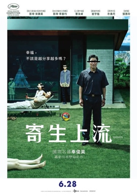
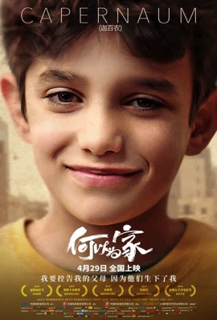

小偷家族
年份：2018
简介：
在东京角落一处无人注意的老屋里，住着秘密生活的一家人。他们靠「奶奶」的养老金生活，间或打工，习惯游荡在商店之间，顺手牵羊地偷点日常用品。 一个冬夜，「爸爸」阿治发现一位被赶出家门的小女孩， 把她「偷」了回去，成为新的家庭成员。 众人一起度过了短暂而其乐融融的时光， 然而一次意外引发了令人震惊的真相浮出水面， 他们也赫然发现，日夜相处的家人，彼此背后藏着无法言说的往事和复杂的勾连……
电影信息：
导演: 是枝裕和编剧: 是枝裕和
主演: 中川雅也 / 安藤樱 / 松冈茉优 / 城桧吏 / 佐佐木美结
主演: 剧情 / 家庭 / 犯罪
燃烧
年份：2018
简介：
改编自村上春树短篇小说《烧仓房》，在一次送货的过程中，年轻的邮差钟秀（刘亚仁 饰）偶然间与惠美（全钟淑 饰）相遇，这个年轻女孩之前曾住在与他相同的街区。 在前往非洲旅行之前，她请求钟秀照顾她的猫咪。旅行回来后，惠美向他介绍了本（史蒂文·元 饰），一个她在旅途上认识的神秘男人。 一天，本向钟秀展示了自己奇怪的爱好……
电影信息：
导演: 李沧东编剧: 李沧东 / 吴政美 / 村上春树
主演: 刘亚仁 / 史蒂文·元 / 全钟瑞 / 金秀京 / 崔承浩
主演: 剧情 / 悬疑
寄生虫
年份：2019
简介：
《寄生虫》讲述了发生在身份地位悬殊的两个家庭身上的故事： 宋康昊饰演的无业游民父亲基泽，让寄托了家人生计希望的大儿子（崔宇植 饰）前往IT公司老总朴社长（李善均 饰）家应聘课外教师，随之发生了一连串意外事件。
电影信息：
导演: 奉俊昊编剧: 奉俊昊 / 韩进元
主演: 宋康昊 / 李善均 / 赵汝贞 / 崔宇植 / 朴素丹
主演: 剧情 / 喜剧
大佛普拉斯
年份：2017
简介：
菜埔（庄益增饰）是一家雕塑厂的夜间保安，家中有一位重病的老母亲需要照顾。 肚财（陈竹昇饰）是菜埔唯一的朋友，菜埔经常在值夜班的时候把肚财叫过来和他作伴。 一天，两人突发奇想决定看一看菜埔的老板黄启文（戴立忍饰）的行车记录仪里记录了哪些影像，希望向来风流的老板能够贡献出一些精彩的片段以解两个独身男人内心里的寂寞之苦。 行车记录仪所记录的影像果然没有让菜埔和肚财失望，但与此同时，两人也发现了黄启文的许多不可告人的秘密。实际上，菜埔和肚财的一举一动皆没有逃过黄启文的眼睛，为了保住自己的地位和名声，他决定采取一些必要的行动。
电影信息：
导演: 黄信尧编剧: 黄信尧
主演: 庄益增 / 陈竹昇 / 戴立忍 / 张少怀 / 陈以文
主演: 剧情 / 喜剧 / 犯罪
何以为家
年份：2018
简介：
法庭上，十二岁的男孩赞恩（赞恩·阿尔·拉菲亚 饰）向法官状告他的亲生父母，原因是，他们给了他生命。 是什么样的经历让一个孩子做出如此不可思议的举动？ 故事中，赞恩的父母在无力抚养和教育的状况下依然不停生育，作为家中的长子赞恩，弱小的肩膀承担了无数生活的重压。 当妹妹被强行卖给商贩为妻时，赞恩愤怒离家，之后遇到一对没有合法身份的母子，相互扶持勉强生活。然而生活并没有眷顾赞恩，重重磨难迫使他做出了令人震惊的举动……电影信息：
导演: 娜丁·拉巴基编剧: 娜丁·拉巴基 / 吉哈德·霍加里 / 米歇尔·凯斯沃尼 / 乔治斯·哈巴兹 / 哈立德·穆扎纳
主演: 赞恩·阿尔·拉菲亚 / 约丹诺斯·希费罗 / 博鲁瓦蒂夫·特雷杰·班科尔 / 卡萨尔·艾尔·哈达德 / 法迪·尤瑟
主演: 剧情